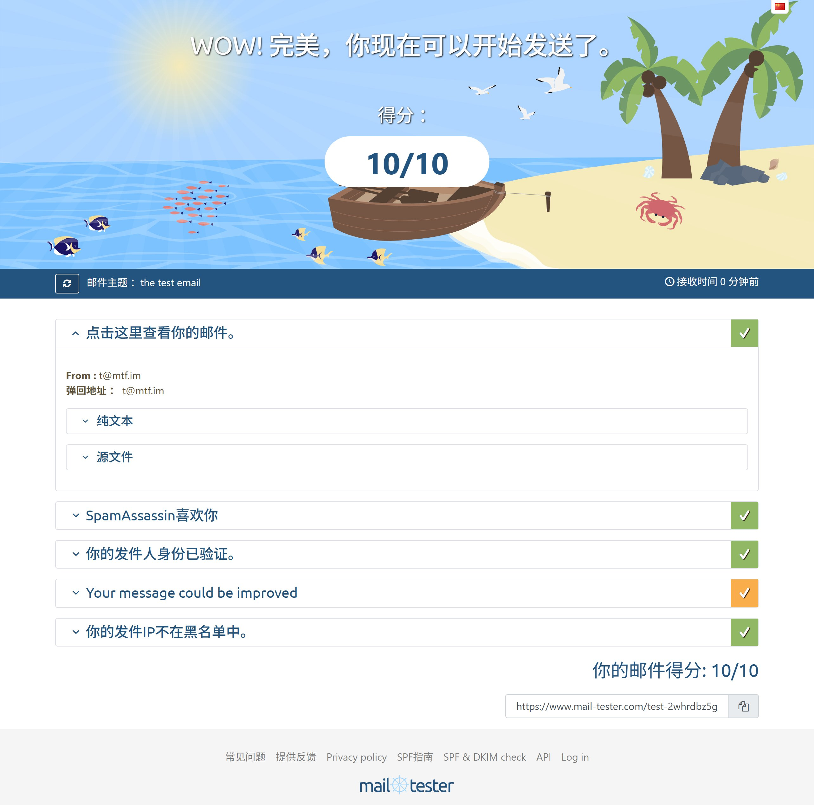

たたなこ🏳️⚧️🍥
@tatanakots
现在免费邮件服务开启内测，仅限mtf申请，需向我保证不会用于垃圾邮件和任何滥用行为，并且日发信量<50封，申请资格请写小作文发送到t@mtf.im，现在开放的用户名为8-12位，不允许特殊符号。
内测名额数量有限，收件箱大小默认1GB，不保证SLA和收件箱数据安全，可能会随时删档。

たたなこ🏳️⚧️🍥
@tatanakots
https://t.co/mRW7JpFgbb 的邮件发送服务已经配置完成，可以被完全信任，Gmail也能收信
测试报告：https://t.co/jMOoYzGoaS https://t.co/3rloFJAhq0